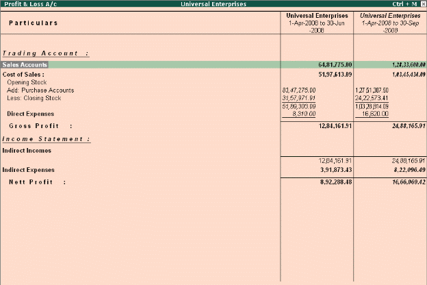

Flexible Period Accounting
Tally.ERP 9 is one of the most flexible accounting packages available and this can be illustrated by the fact that it can handle multiple periods in a single company. Once a company is created you can specify any range of dates and obtain reports for that period. These date range can also be across multiple financial years. i.e. you can get a report for monthly, quarterly, half-yearly or annually or for 18 months or 24 months and so on.
Example: Go to Gateway of Tally > Profit & Loss A/c.
# Select F2: Period and specify the date range to view the report.
